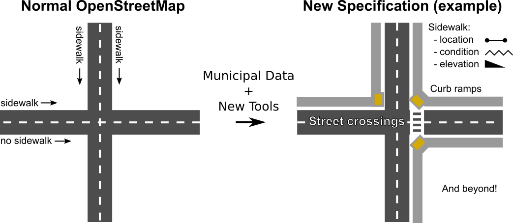

Sidewalks provide a primary mode of travel that supports nearly all other travel options, leisure, recreation and community activities. This project seeks to make pedestrian ways, particularly sidewalks, first class members of an open data transportation network.
There does not exist a widely-used, shared data schema for collecting or disseminating pedestrian pthway information. In particular, data on sidewalks are usually not collected at all, but when they are they may be as roughly-drawn lines of questionable spatial accuracy (Seattle DOT), metadata of streets (many agencies, OpenStreetMap - see figure below), or as disconnected polygons derived from overhead imagery.
OpenSidewalks is led by the Taskar Center for Accessible Technology (TCAT) at the University of Washington, whose mission is to develop and deploy technologies that improve quality of life for people with disabilities.
Urban@UW, a partnering University of Washington coalition, has fostered long-term partnerships with key leaders and stakeholders to prioritize urgent urban challenges and support equitable urban growth.
We are also thrilled to partner with Feet First, the only pedestrian advocacy group operating in Washington State, promoting community engagement in pedestrian ways and supporting projects like Safe Routes to School.
The University of Washington's eScience Institute provided an opportunity for the OpenSidewalks project to develop as a part of their Data Science for Social Good program that took place in the summer of 2016. Through this program, an interdisciplinary team of project leads, data scientists, and student fellows spent 10 weeks pushing the project forward.
Nick Bolten
Anat Caspi
Vaughn Iverson (primary)
Bryna Hazelton (secondary)
Tom Disley
Meg Drouhard
Jess Hamilton
Kaicheng Tan